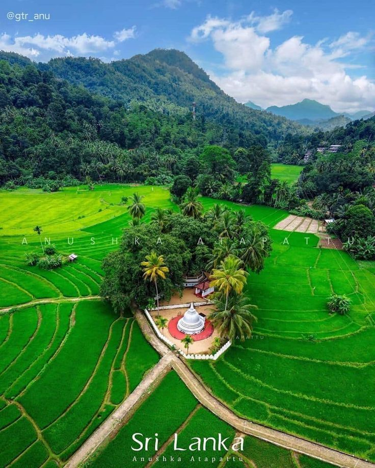
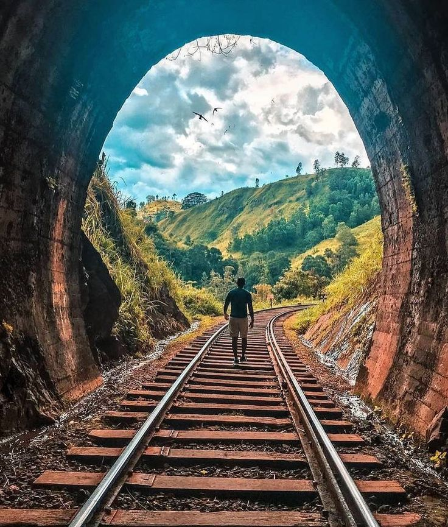
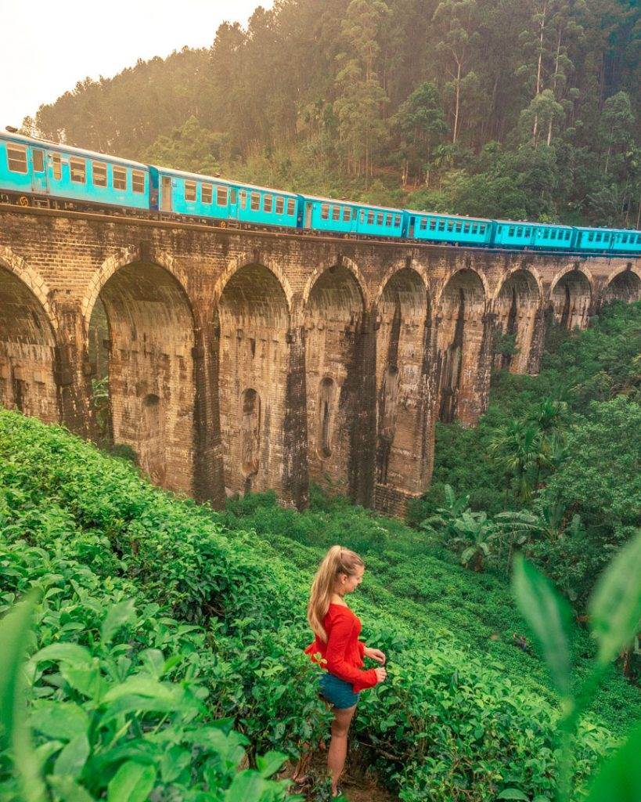
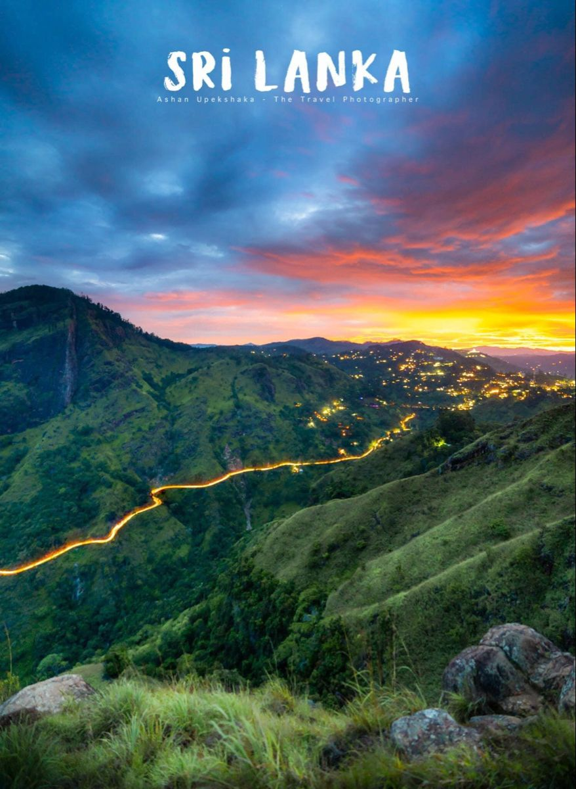
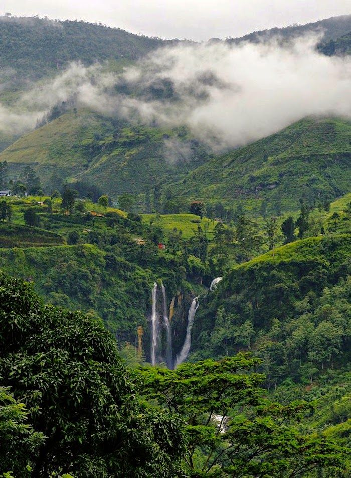
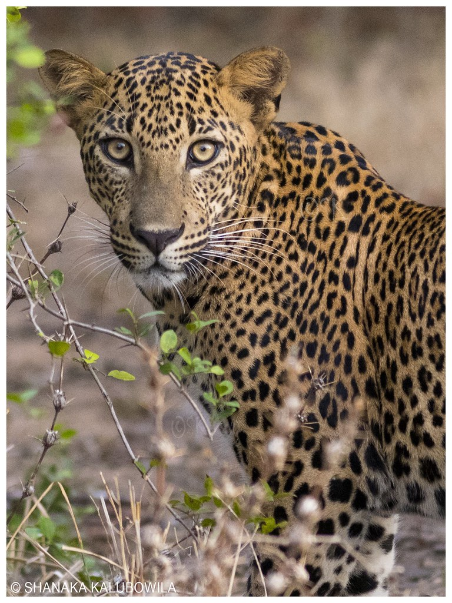
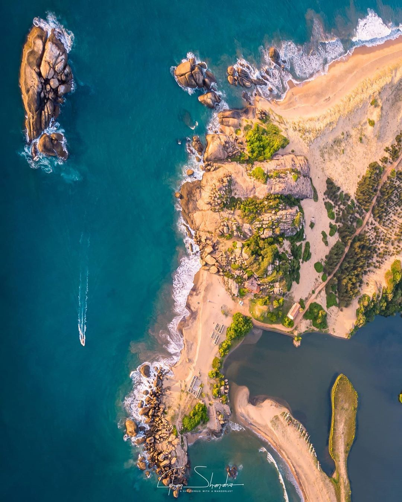

YASIRU SENARATH
About Me
Education
-
BSc in BM (Logistic) Special Degree
(NSBM Green University - 2020) -
G.C.E. A/L Examination
(2015 & 2016) -
G.C.E. O/L Examination
(2012)
Work Experience
-
Senior Executive + ( Safety Officer ) - Neat Solutions
[ Performing Weekly Whole fleet vehicles Safety inspecon according to Safety guidelines. Reporng Safety inspecon with Management and processing Monthly reports. Managing and inspecon total Slag & Gypsum yard. Regularly conducng Safety meeng with Drivers and staffs. Managing fuel distribuon and documentaon with Vehicle ] (August 2022 - 2023) -
Operations Supervisor - Spectra Logistics (PVT) LTD
[ Liaise with service providers to get their prompt attendance on services, upgrading, renewals on fire, safety, pest control, security, warehouse maintenance. Coordinaon in receiving informaon about Shipment arrivals. Coordinaon with suppliers to arrange the transport Coordinaon with receivers to deliver the materials on me. Monthly invoice statements preparing Invesgate transport related & WH related issues & finalized. ] (Jan 2021 - August 2022) -
Monitoring of KPI towards customer expectation and warehouse arrangements.
[ Monitoring Storing incoming shipment in the correct locaon & maintaining FIFO system when issuing. Shipment unloading monitoring. Communicate customer damaged & short cargo. Monitoring of the picking process as per customer's request Following up unl materials are delivered to site on me. Following up the POD (Proof of Delivery) from transporters handover to customers on me. Preparing Monthly KPI reports & sends it to Customer ]
Personal Informations
| Full Name : | Senarath Yasiru Gayashan |
| Date of Birth : | 23rd of August 1996 |
| Nationality : | Sri Lankan |
| Address : | No:206C4 , Agunukolawala Road, Ambalanthota, Sri Lanka |
| Contact No : | +81 9097678830 |
Hobbies & Interests
- Reading
- Volunteering
- Travel
- Movies
- Music
- Art
- Singing
Mother Sri Lanka
Visit Sri Lanka
Social Links


Beauty of Sri Lanka







